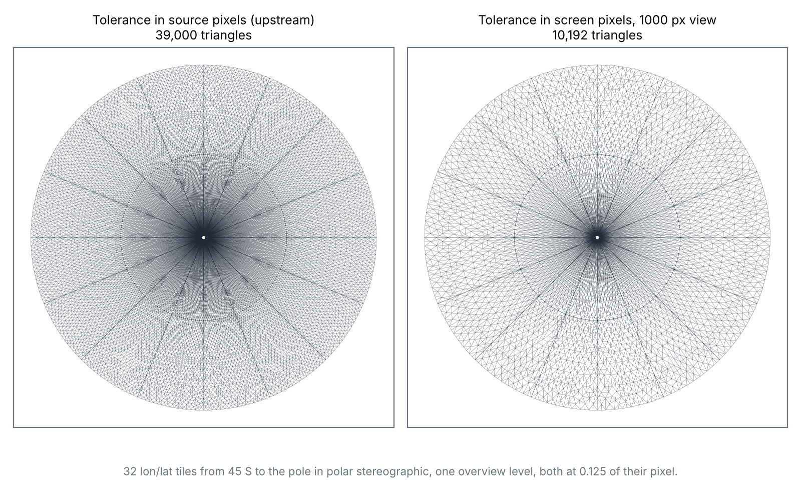
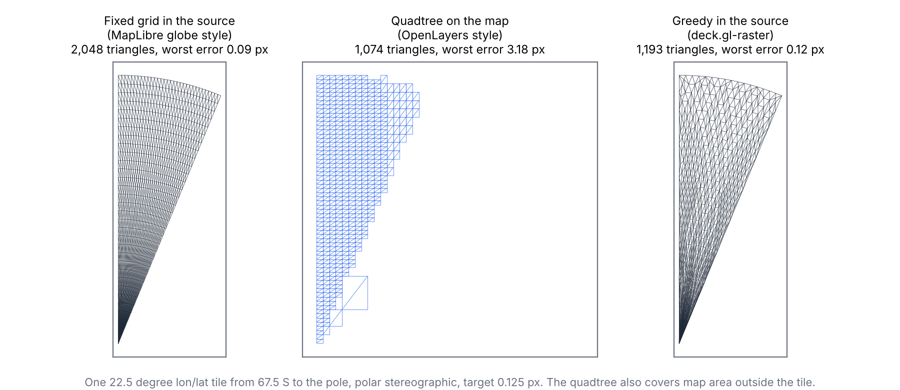
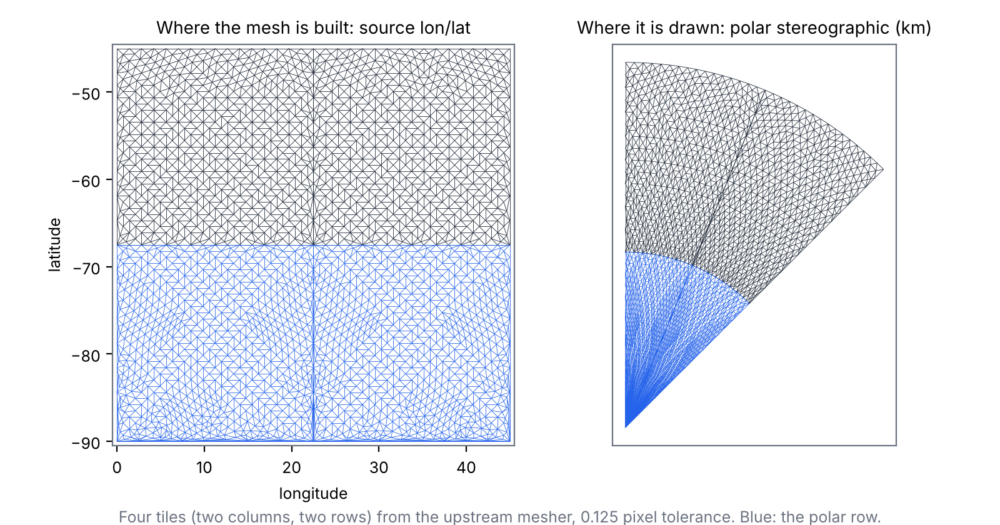
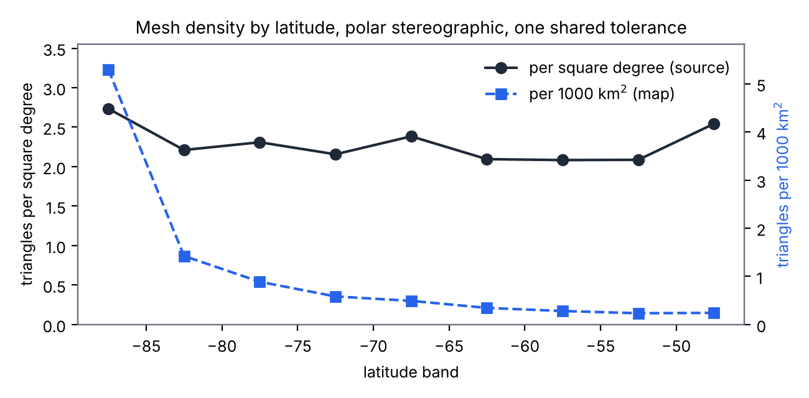
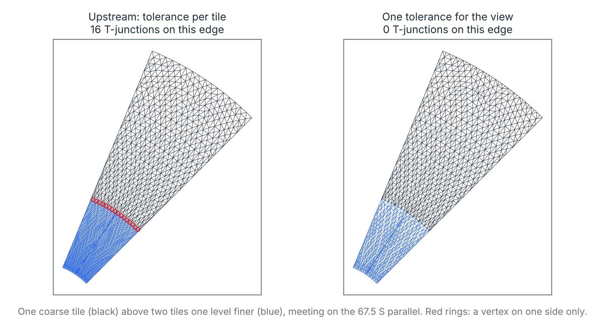
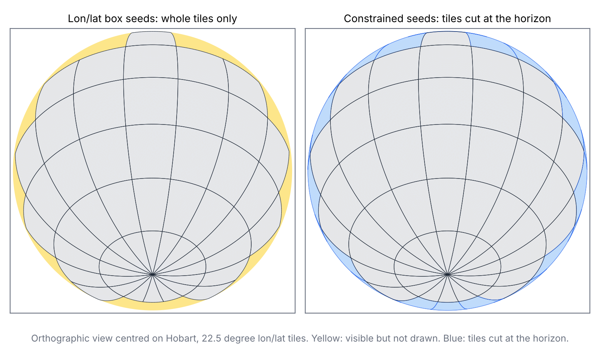
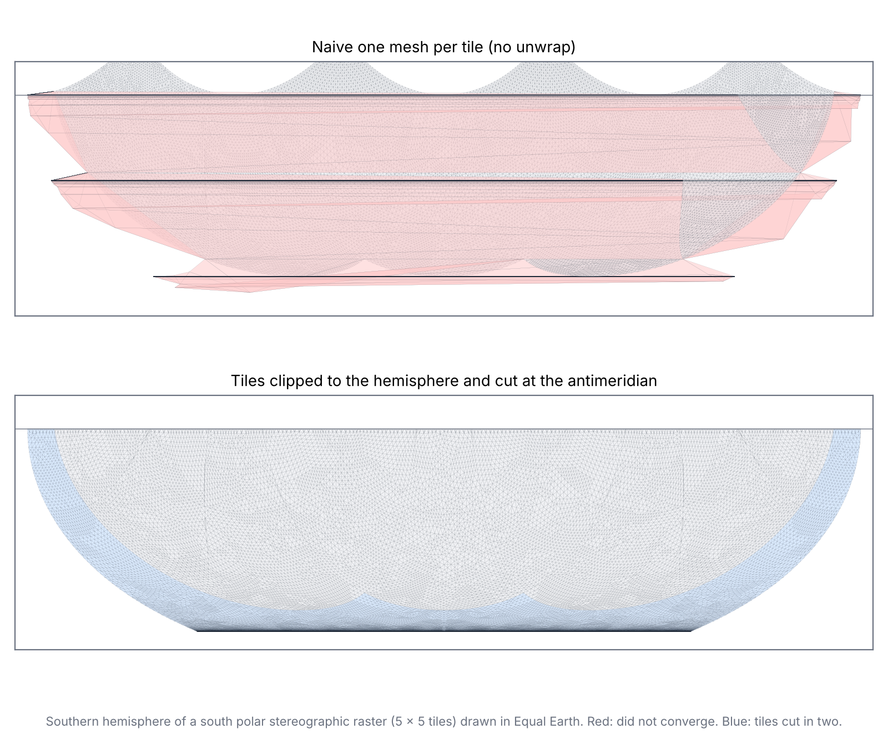

trianglewins / dev draft
Reprojection meshes for raster tiles
Development draft, 12 November 2026.
A browser map that shows a raster in a CRS other than its own usually does not resample the pixels. It draws each tile as a texture on a mesh of triangles. Each mesh vertex is projected exactly, and the GPU interpolates the texture coordinate linearly across each triangle. So the mesh carries the warp, and how it is built decides accuracy, triangle count, seams between tiles, and which projections and domains can be drawn at all.
This page surveys how current tools build that mesh. It then takes
the most adaptive of them, deck.gl-raster's
RasterReprojector, measures it headless against cases that
are hard for it (polar, hemispheric, antimeridian), and sets out where
our tools (bigcurve, cdtr and laridae, the mesh spec, and the
sizing-field work) fit. The scripts and results are in survey/dev-drafts/reprojection-mesh/.
Nothing here has been proposed upstream.
The short version:
- There are three families. A fixed grid per tile (MapLibre's globe), a quadtree built on the map (OpenLayers), and greedy refinement in the source (deck.gl-raster). GDAL's warper and d3-geo apply the same midpoint test to rows and lines. On one polar tile at the same tolerance, the greedy mesher needs about half the triangles of the fixed grid, and the map quadtree cannot get the pole right at all.
- Density follows the warp, not the information in the pixels. Linear interpolation of a longitude/latitude grid near a pole needs a roughly fixed number of triangles per square degree, and that is where the dark disc in a polar view comes from. The mesher is close to optimal for the tolerance it is given.
- The tolerance is the lever, and it is a heuristic. deck.gl-raster uses gdalwarp's 1/8 pixel, measured as one source pixel's size at each tile's centre. Tile selection keeps a source pixel at or under one device pixel, so that is roughly a screen tolerance at the centre of each tile. It does not follow pixel size across a tile, and tiles from different overview levels then meet with T-junctions. One unit for the whole view fixes the seams. At one fixed overview level, a screen-pixel unit thins the polar disc from 39,000 to 10,192 triangles, an upper bound on the saving.
- Constrained seeds widen what can be drawn. The mesher accepts any starting triangulation. Seeds clipped to the projection's domain draw an orthographic hemisphere. Seeds cut along the antimeridian also handle the tile that holds the pole, which lets a polar stereographic raster be drawn in Equal Earth. Both cases are listed as unsupported in the deck.gl-raster custom-projection example today.

The landscape
All of these share one idea: project some points exactly, interpolate between them, and test a midpoint to decide whether to split. They differ in what gets split, where the mesh lives, and what the tolerance is measured against.
| tool | what is approximated | mesh lives in | how it refines | tolerance (default) |
|---|---|---|---|---|
| GDAL warp (approximate transformer) | the transform along each output row | output pixels | halve a row segment while its midpoint is off | 0.125 pixel (-et) |
| d3-geo resampling | projected lines | the line | bisect an edge while its projected midpoint is off the chord, plus an angle test | about 0.7 pixel (precision) |
| OpenLayers raster reprojection | each tile's image | the target map | split a quad while its centre, mapped back, misses the mean of two corners | 0.5 pixel, up to 10 levels |
| MapLibre globe | each raster tile | the source tile | a fixed grid: 128 cells at zoom 0, halved per zoom, at least 32 | none (fixed) |
| deck.gl-raster | each tile's image | the source tile | greedy Delaunay insertion at the worst of four sample points (from Delatin) | 0.125 of a source pixel on the map |
To compare the three tile strategies directly, the sandbox meshes one polar tile (22.5 degrees of longitude, 67.5 S to the pole, drawn in polar stereographic) each way, and measures the true error on the map: for each point, how far the source content the GPU samples there sits from where it belongs. The grid and quadtree versions follow each tool's rule as described above. They are not the tools' code.

| strategy, one polar tile | triangles | worst error (pixels) |
|---|---|---|
| fixed grid in the source (smallest power of two that meets 0.125) | 2,048 | 0.09 |
| quadtree on the map | 1,074 | 3.18 |
| greedy in the source (deck.gl-raster, shared unit) | 1,193 | 0.12 |
The map quadtree fails near the pole for a structural reason. A mesh built on the map has to interpolate longitude, and longitude jumps at the pole and the antimeridian, where no linear interpolation can follow it. A mesh built in the source never interpolates longitude, only texture position. That is the main reason to build in the source. The fixed grid works, but spends triangles evenly where the warp needs them unevenly.
deck.gl-raster's mesher
RasterReprojector starts each tile from two triangles
over its pixel rectangle, in source texture coordinates. For each
triangle it projects the centroid and the three edge midpoints exactly,
compares them with where the GPU would draw them, inserts a vertex at
the worst one, and re-legalises the Delaunay triangulation in source
coordinates. It stops when the worst error is under
maxError, which defaults to 0.125 of one source pixel's
size on the map, measured at the tile's centre.

The sandbox setup follows the deck.gl-raster custom-projection example with GEBCO (EPSG:4326) shown in Antarctic polar stereographic: 22.5 degree tiles of 512 pixels, two rows from 45 S to the pole, spherical stereographic with standard parallel 71 S. P is one source pixel on the map at 71 S (2.79 km). Errors are in P unless stated.
Where the density comes from
An edge that is straight in longitude/latitude is curved on the polar
map. Along a parallel it becomes an arc. Along a meridian it stays
straight. An edge that changes both becomes part of a spiral, whose
bulge is about rho' * dlon * dlat / 4, where
rho' is how fast the distance from the pole grows with
latitude. Near the pole rho' is nearly constant, so the
largest triangle allowed has about the same size in square degrees
everywhere: about 0.37 square degrees at 0.125 P, or 2.7 triangles per
square degree. The mesher lands close to that:

| latitude band | triangles per square degree | triangles per 1000 km^2 |
|---|---|---|
| 90 to 85 S | 2.73 | 5.30 |
| 80 to 75 S | 2.31 | 0.89 |
| 70 to 65 S | 2.38 | 0.49 |
| 50 to 45 S | 2.54 | 0.24 |
So the density in the source is about even, and the map squeezes square degrees together toward the pole. Near the pole, many lon/lat pixels share one screen pixel, and the GPU averages them away when it shrinks the texture. Triangles there place pixels nobody can resolve. For a fixed tolerance, no source-space mesh does much better. The waste is in the tolerance.
The tolerance
The 0.125 comes from gdalwarp, whose output grid is about as fine as its source, so a fraction of a source pixel is a fraction of an output pixel. A viewer is different. What matters is a fraction of a screen pixel, and a source pixel can be much smaller or larger than that, across the view and inside one tile. Measured against a screen pixel for a view where the disc from 45 S fills 1000 pixels (10.3 km per pixel), the same tiles at the same overview level need far fewer triangles:
| polar disc, one overview level | triangles | worst error |
|---|---|---|
| source-pixel tolerance, per tile (upstream) | 39,000 | 0.17 P |
| one source-pixel tolerance for all tiles | 37,152 | 0.12 P |
| screen-pixel tolerance, 1000 px view | 10,192 | 0.125 screen px |
This comparison holds the overview level fixed, so it is an upper bound. deck.gl-raster picks each tile's level so that a source pixel is at most one device pixel (lod-and-pixel-matching). At this view it would choose a coarser level, which brings the per-tile unit close to a screen pixel at each tile's centre. What a per-tile unit cannot follow is the spread of pixel size inside a tile (in the polar row it shrinks with the cosine of latitude) and between neighbouring tiles. Their own design note for output-pixel error makes the same point about a fixed source-pixel tolerance, and lists per-tile pixel size in tile selection as later work (output-pixel error design).
A per-tile unit also breaks seams. When neighbouring tiles come from different overview levels, the finer tile's unit is half the size, so it splits the shared edge more finely:
| polar cap one overview level finer than the outer row | per-tile unit (upstream) | one unit for the view |
|---|---|---|
| triangles in the polar cap | 69,440 | 19,104 |
| T-junctions on tile seams | 256 | 0 |
| widest seam gap | 0.067 P | 0 |

The gaps are under a tenth of a pixel, so they show as an occasional dropped pixel along a seam rather than a crack. The cost of one unit for the view is that a cached mesh then depends on the zoom as well as the tile. A quantised zoom is enough.
One more small finding: deck.gl-raster stops geographic grids half a degree short of each pole, a hole about 110 km across. In output-pixel mode the mesh converges all the way to the pole, and the polar row needs fewer triangles (20,400 against 21,440), because the slivers along the cut edge go away.
Domains that are not boxes
deck.gl-raster's seed is a pixel rectangle, possibly clamped to a
longitude/latitude box. The mesher itself accepts any valid starting
triangulation (initialTriangulation, in delaunator's
halfedge shape). A seed can be a tile clipped to the projection's valid
area and triangulated with constraints. Both cases below use Shewchuk's
Triangle (the p switch, no refinement) for the seeds,
standing in for cdtr or laridae, and the unchanged mesher with one
shared unit.
An orthographic hemisphere. Each 22.5 degree longitude/latitude tile is clipped to the cap visible from the view centre (89.5 degrees from Hobart), traced at even spacing on the sphere.

| orthographic, centred on Hobart | box seeds (whole tiles only) | clipped seeds |
|---|---|---|
| tiles drawn | 51 | 77 |
| triangles | 44,886 | 63,911 |
| share of the visible disc covered | 92.3% | 100% |
| worst error | 0.127 P | 0.129 P |
A polar-native raster in a world projection. deck.gl-raster already draws tiles that cross the antimeridian: it makes the forward projection continuous by moving each point to the nearest copy of the world, meshes the tile once, and clips the mesh at the world's edge (antimeridian unwrap design). That cannot help a tile that holds a pole, because the pole is one point in the source and a whole line on the map. So the example offers polar-native rasters only in their own projection.
The test case is a south polar stereographic raster of the southern hemisphere, in 5 x 5 tiles of 512 pixels, drawn in Equal Earth. One tile holds the pole, and the column below it straddles the antimeridian (the ray from the pole along longitude 180). The baseline below is the naive one mesh per tile, without the unwrap, so it shows the problem rather than deck.gl-raster's behaviour. With seeds, each tile is:
- clipped to the hemisphere, minus a cap of radius 0.05 degrees at the pole (5.6 km, under one pixel);
- cut along the antimeridian into a west part and an east part, if the antimeridian crosses it;
- meshed one part at a time, each with its own longitude branch, so the vertices on the cut go to -180 on one side and +180 on the other.

| polar stereographic raster in Equal Earth | naive one mesh per tile | clipped and cut |
|---|---|---|
| tile meshes (converged) | 25 (22) | 28 (28) |
| triangles | 94,698 | 79,059 |
| triangles spanning half the world | 58,836 | 0 |
| worst error | 3,353 P | 0.125 P |
| map area drawn, share of the hemisphere | 198% | 100% |
For the tiles below the pole, the unwrap would do the same job as the cut. The cut matters for the pole tile, and it needs two meshes for one tile, each with its own projection function. The tiny cap at the pole stays undrawn: on the map it is a band 5.6 km tall along the bottom edge. Closing it exactly needs vertices that share a texture coordinate but not a map position, which the mesher's data structure does not allow.
Edges
The greedy mesher only splits a boundary edge at its midpoint, and only when the projected midpoint misses the chord by more than the tolerance. That is the same rule as bigcurve's and d3-geo's, applied lazily during refinement. It comes from Delatin's sample points (delatin.ts L23-28) and its split when the worst sample lies on an edge (L506-520), not from bigcurve. The test differs slightly. It measures the distance to the chord's midpoint, so sliding along the chord counts as well as bulging off it, while d3-geo and bigcurve measure the distance off the chord.
Because the rule depends only on the edge and the tolerance, and midpoints nest across levels, a shared tolerance is all the seams need. Densifying every tile edge up front with bigcurve's rule gave the same seam vertices and cost 26% more triangles (46,732 against 37,152), since a seed with many boundary points refines less efficiently.
Edge logic like this works best as an edge oracle that meshers link to, not something each mesher builds in. It takes an edge and a tolerance and decides the vertices from the edge alone. A mesher calls it for boundary and constraint edges, up front (bigcurve, then cdtr or laridae) or lazily (this mesher).
Where our tools fit
| tool | role here |
|---|---|
| bigcurve | the edge oracle: densify domain edges, antimeridian cuts and constraint edges by a rule both neighbours share |
| cdtr, laridae | the constrained seeds: tile minus out-of-domain area, cut lines as constraints |
| mesh spec v0.2 | a tile mesh is a mesh with texture coordinates as input and map xy
as derived positions; split vertices carry
origin = densify, and edge_sources lets seams
be checked from topology instead of geometry |
| sizing fields | the density limit above is an anisotropic sizing field for this warp, which no projection supplies; a greedy refiner finds it by sampling |
What could be done
Tested here, in the sandbox:
| change | effect measured | size of change |
|---|---|---|
| one error unit for the view, in device pixels (zoom-keyed cache) | no T-junctions across levels (256 before); polar disc 39,000 to 10,192 triangles at one fixed level (an upper bound) | one option (the sandbox's _pixelSize, see
pixel-size.patch) plus the view's pixel size |
| close the half-degree pole guard | 5% fewer polar triangles, no 110 km hole | remove a clamp |
| seeds clipped to the projection's domain | orthographic hemisphere 92.3% to 100% covered | a seed builder; the mesher is unchanged |
| pole tile cut along the antimeridian, a longitude branch per part | polar-native raster in Equal Earth converges, 0.125 P, nothing smeared | up to two meshes for the pole tile, each with its own projection function |
Not tested yet:
- Per-pixel inverse projection in the shader for analytic projections such as polar stereographic, which needs no mesh at all.
- Closing the polar cap exactly, with duplicated texture coordinates at the pole.
- Exporting tile meshes in mesh spec form (texture
coordinates, positions,
edge_sources) so seams and coverage can be checked by tools outside the viewer. - cdtr or laridae seeds from R, in place of Triangle, with bigcurve densifying the domain edges.
Running it
cd survey/dev-drafts/reprojection-mesh
sh fetch-upstream.sh && npm install
node --experimental-strip-types run.mjs
python3 strategies.py
python3 ortho_seeds.py
node --experimental-strip-types ortho.mjs
python3 am_seeds.py
node --experimental-strip-types antimeridian.mjs
python3 figures.pyfetch-upstream.sh gets deck.gl-raster's mesher at a
pinned commit and applies the patch, and npm adds delaunator. Node 22
runs the TypeScript directly. The Python steps need numpy, shapely,
triangle and matplotlib. The CSVs in results/ hold every
number quoted here.